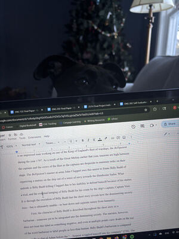

Experience

Currently, I am a sophomore at University of Massachusetts Amherst, working towards a Bachelor in Fine Arts in English with a concentration in Creative Writing and a member of the Commonwealth Honors College.
I have been writing short fiction since I was very young, and was often the one that people went to if they wanted someone to look over their own writing, whether it was academic or a creative piece. In High School I was an assistant editor for my schools yearbook and taske with reading through the whole book for spelling or grammer errors and to make sure that names and credits were consistent throughout.
Want a more comprehensive resume? click here!